- All strings that contain exactly 4 0s.
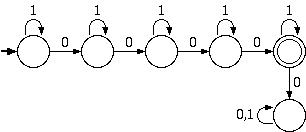 - All strings ending in 1101.
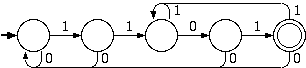 - All strings containing exactly 4 0s and at least 2 1s.
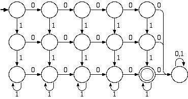 - All strings whose binary interpretation is divisible by 5.
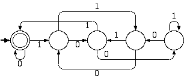 - (1.4c) All strings that contain the substring 0101.

- (1.4e) All strings that start with 0 and has odd length or start with 1 and has even length.
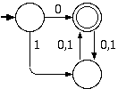 - (1.4f) All strings that don't contain the substring 110.
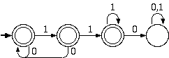 - (1.4g) All strings of length at most 5.
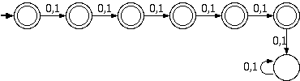 - (1.4i) All strings where every odd position is a 1.
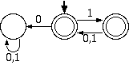
- All strings containing exactly 4 0s or an even number of 1s. (8 states)
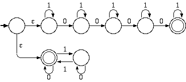 - All strings such that the third symbol from the right end is a 0. (4 states)
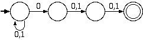 - All strings such that some two zeros are separated by a string whose length is 4i for some i>=0. (6 states)
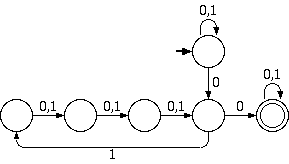 - (1.5b) All strings that contain the substring 0101. (5 states)
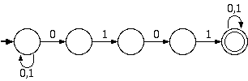 - (1.5c) All strings that contains an even number of 0s or exactly two 1s. (6 states)
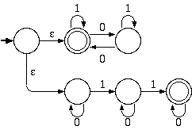 - (1.5e) The language 0*1*0*0 (3 states)
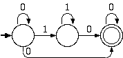
- Convert the NFA in 2f into a DFA.
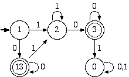 - 1.2a in the text
- 1.2b in the text
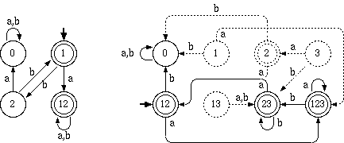
L1: The set of strings where each string w has an equal number of zeros and ones; and any prefix of w has at least as many zeros as ones.
L2: The set of strings defined inductively as follows: if w is in the set then 0w1 is also in the set; if u and v are in the set then so is uv; and the empty string is in the set.
- Prove that every string in L2 is contained in L1
We can analyze L2 inductively to see that it maintains the property of L1 for each case:
- The empty set. This is a member of L1, since it satisfies the properties vacuously.
- 0w1. Assuming that w is in L1, we maintain the equal number of 0s and 1s because we add one of each. We also maintain the prefix condition, since the 0 is added before the 1.
- uv. Assuming that u and v are both in L1, simply concatenating them together will maintain the equal number of 0s and 1s. The prefix condition is slightly more difficult. We consider the following prefixes:
- PREFIX(u). Since u is in L1, this must be in L1.
- u. Again, since u is in L1, this must be in L1.
- uPREFIX(v). Since u has an equal number of 0s and 1s, and v is in L1, this must maintain the prefix property.
- For those of you who are paying attention, this problem is extemely similar to the stream-crossing ghostbusters problem from algorithms. The proof is by induction on the length of strings in L1:
- The base case is the empty string. This is in L2 by definition.
- For the inductive step, suppose that all strings in L1 of length <= n are in L2.
Let w be a string in L1 of lenght n+1 and suppose it is of the form A1A2...An+1, where Ai is either 0 or 1.
Let j be the first index with the property that A1A2...Aj
has the same number of zeros and ones. There are two cases to analyze.
- j < n+1. Then not only does u = A1A2...Aj have the same number of zeros and ones, any prefix of u will have at least as many zeros as ones since it is also a prefix of w. So u is in L1. Let v = Aj+1Aj+2...An+1. Then v must have the same number of zeros and ones since both u and w=uv do. Also, any prefix x of v cannot have more ones than zeros in it since then ux would be a prefix of w that had more ones than zeros. Therefore v must be in L1. Since both u and v are of length <= n, by the induction hypothesis they are in L2. Therefore w = uv must be in L2, by the definition of L2.
- j = n+1. Then w = 0u1 for some string u, and u has the same number of zeros and ones, since w does. Also, no prefix x of u can have more ones than zeros, since then 0x would either have more ones than zeros which is impossible by hypothesis, or 0x would have the same number of ones as zeros, which is also impossible by since j = n+1. Therefore we can conclude that u is in L1, and since it is of length <=n it is in L2 by the induction hypothesis.
- Prove that if L1 is regular and L2 is regular then so is L1-L2 (the set of all strings in L1 but not in L2).
L1-L2 is the same as the intersection of L1 and the complement of L2. Since the set of regular languages is closed under each of these operations, L1-L2 must be regular.
- Prove that if L is regular then Prefix(L) is regular. Prefix(L) is the set of all strings which are a proper prefix of a string in L.
We can construct a DFA to decide Prefix(L) by taking the DFA for L and marking all states from which an accept state is reachable as accept states. So, Prefix(L) must be regular.
- Prove that Regular Sets are closed under MIN. MIN(R), where R is a regular set, is the set of all strings w in R where every proper prefix of w is in not in R. (Note that this is not simply the complement of PREFIX).
We can construct a DFA to decide MIN(R) by taking the DFA for R and redirecting all outgoing arrows from all the accept states to a dead state. So, MIN(R) must be regular.
- Prove that Regular Sets are NOT closed under infinite union. (A counterexample suffices).
Consider the sets {0}, {01}, {0011}, etc. Each one is regular because it only contains one string. But the infinite union is the set {0i1i | i>=0} which we know is not regular. So the infinite union cannot be closed for regular languages.
- What about infinite intersection?
We know that
{0i1i | i>=0} = {0} U {01} U {0011} U ...,
Taking complements and applying DeMorgan's law gives us
{0i1i | i>=0}c = {0}c ^ {01}c ^ {0011}c ^ ...,
Where we are using U to deonte union and ^ to denote intersection. Recall the complement of a regular language is regular, and hence the complement of a not-regular language is not regular. So we can conclude that the left hand side of the equation is not-regular, and each term in the intersection is regular. Therefore infinite intersection does not preserve regularity. - extra credit Let (Q, Sigma, delta, q, F) be a deterministic machine that accepts L.
Then a machine that accepts Half(L) is
(QxQxP(Q), Sigma, delta', {(q, r, {r}) }, { (r1,r2,S) in QxQxP(Q) | r1=r2 and S contains an element of F} )where P(Q) is the power set of Q, i.e. all subsets of Q., anddelta'(r1, r2, S, a) = (delta(r1,a), r2, Sa)
and Sa denotes the set of states that can be reached from some state in S in one step with input a. To simplify the notation, we are allowing multiple start states {(q, r, {r}) }. This could be also achieved by introducing a new state and introducing epsilon moves. The reason that this accepts Half(L) is that the term r2 in (r1,r2,S) remembers the midpoint of a potential string in L, and S represents the states one can reach from r2 in the number of steps it takes to get from the start q to r1. When r1=r2, then S contains all the paths that one can get to in twice as many steps as it took to get from q to r1.An intuitive explanation The Half(L) problem is given a string w is there a string x of the same length as w such that wx is in the language L. This is hard to solve directly, so we break it into a number of subproblems of the following form: Fix a machine M that generates L and pick a state r in that machine.
The problem Half(L,r)is then: Given a string w, is there a string x of the same length as w such that wx is in the language L and after reading in w, the machine M is in the state r.
We can reduce solving Half(L) to solving Half(L,r) for each state r in the machine M and oring the result. The reason this is good is that the problem Half(L,r) decomposes naturally into two other simple problems:
If we make the machine M' by making all accept states in M be reject states, and by making state r an accept state, does M' accept the string w?
and
If we make the machine M'' by making state r the start state, and changing all 0 transitions to 0,1 transitions and similarly all 1 transitions to 0,1 transitions, does the machine M'' accept the string w?
What we have done in the second case is to ingnore what the value of any character in the string is. This is how to make a machine to accept all strings that have the same length as strings accepted by a given machine. Putting all this together should result in a similar machine to what is given for a solution here, with possibly some missing extraneous states.
- (10+0)*(1+10)*
(10+0)* will generate all strings that do not contain a pair of 1s, and (1+10)*, the strings that do not contain a pair of 0s. So, the concatenation will generate all strings in which every occurrence of 00 precedes every occurrence of 11. - 0*(1+000*)*0*
We can generate a string which does not contain the occurrence 101 by making sure that any 0 in the middle (between two 1s) of the string must be paired with another 0. - (e+0)(10)*(e+0)(10)*(e+1)(10)*(e+1) + (e+0)(10)*(e+1)(10)*(e+0)(10)*(e+0)
The both terms are just alternating 1's and 0s , eg (e+0)(10)*(e+1) where you are allowed to inert at most one extra 1 or 0 in between. We need two terms, depending on whether the double 1 or the double 0 comes first.
- (1.16a) (a* + ba*b)*ba*
- (1.16b) [(a+b)(a+bb)*ba]*[e+(a+b)(a+bb)*b]
- r(s + t) and rs + rt are equivalent because the first describes
a string from r followed by either a string from s or a string from t, and the
second describes a string from r followed by a string from s or a string from
r followed by a string from t and these two are clearly the same thing.
- (r*)*and r* are equivalent because the first describes the concatenation
of an arbitrary number of terms that themselves are concatenations of arbitrary
numbers of terms in r. This is the same as r* which is the concatenation of an
arbitrary number of terms in r.
- (r + s)* and r*s* are not equivalent because if s1 is a string in s
and r1 is a word in r then s1r1 is in (r+s)* but not r*s*
but not the latter.
- Every NFA can be converted into an equivalent NFA with only a single accept state by creating a new accept state with epsilon moves from each of the old accept states.
- This does not work for DFAs. The DFAs of problems 1g, 1h, and 1i are all good counterexamples.
In general if the minimum DFA for a regular language has more than one final state, then the language cannot be generated by a DFA with one final state. This is because minimization cannot increase the number of final states.
- Claim: The regular languages that can be represented by a DFA with one final state
are of the form RS*, where R and s are regular prefix-free languages.
Proof: We need the following lemma first: A prefix free regular language M can generated by a machine with one final state. Suppose we have DFA representation of M that has multiple final states. Then all outgoing transitions from those final states must go to dead states since M is prefix free. But when we mimize the DFA, all the dead states will become equivalent, and therefore all the final states will become equivalent too.
We also need the following lemma: The Kleene star, M*, of prefix free regular language M can be generated by a machine with one final state. From the previous lemma we know there is a DFA that generates M that has one final state. We can make M* by taking the minimal DFA that accepts M and removing the transitions from the final state and collapsing it together with the initial state (while keeping it a final state).
From these to lemmas it is clear that RS* can be generated by a machine with one final state if R and S are prefix free, because we can just concatenate the machines for R and S*.
Conversely, if L is generated by a DFA M with one final state, then L = Min(L) ( Min(L') )*, where L' is the language of the machine M' has the same states, transitions, and final state as M, and where we choose the final state of M to be the start state of M'. Since the Min of a language is always prefix free, L is of the form we claim.
- Convert [00 + 11 + (01 + 10)(00 + 11)*(01 + 10)]* to a Finite Automaton.
We just reverse the procedure for converting an NFA to a regular expression by ripping-in states.
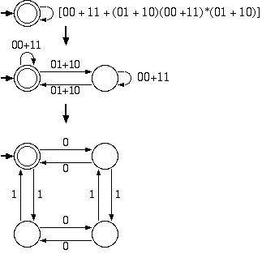
(note: the rightmost state in the second diagram corresponds to the bottom right state in the third diagram.)
- (1.25) Let B = {w | the bottow row of w is the sum of the top two rows}. The reverse of B can be decided by the NFA below, and since the set of regular languages is closed under reversal, B must be regular as well.
The NFA below determines if a string of columns composes a legal addition equation where the top two rows sum to the third. The two states correspond to whether the previous column led to a carryout or not, and the legal transistions for each state correspond to columns which maintain the correctness of the equation. If an invalid column is added, no valid outgoing arrow is found and the computation dies (thus rejecting the input).
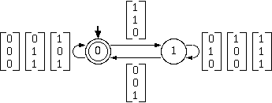
- (1.41) Let D = {w | w contains an equal number of occurrences of 01 and 10}. This language can be decided by the DFA below, and so must be regular.
The DFA works because the number of 01 transistions must always we within one of the number of 10 transistions, so we need only remember which transistion came first (top path vs. bottom path), and whether we have seen an even number or odd number of transistions (left state vs. right state).
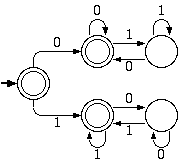